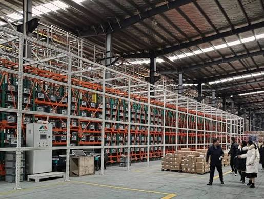

4-Aisle Mini Load ASRS Warehouse | High SKU Automated Storage and Goods-to-Person Picking Solution

Summary
This project demonstrates a high-density mini load ASRS warehouse designed for businesses managing thousands of SKUs and high-frequency order picking operations.
The solution integrates 4 independent high-speed stacker cranes, automated bin storage, conveyor transportation, sorting systems, and goods-to-person picking technology to create a highly efficient warehouse automation workflow.
Unlike traditional manual storage systems that struggle with increasing SKU complexity and labor costs, this automated warehouse design improves storage utilization, accelerates order fulfillment, and reduces dependency on manual picking operations.
This type of ASRS solution is especially suitable for:
E-commerce fulfillment centers
Retail distribution warehouses
Spare parts storage facilities
High SKU manufacturing warehouses
The project demonstrates how companies can optimize warehouse capacity and improve operational efficiency without continuously expanding warehouse space or workforce.
Technology
- Mini Load ASRS + Goods-to-Person Warehouse Automation System
- The system combines multiple automation technologies:
- 1. Multi-Aisle Mini Load ASRS
- Four independent stacker cranes operate across separate aisles to achieve:
- High-speed storage and retrieval
- Precise bin positioning
- Continuous warehouse operation
- High-density vertical storage
- 2. Automated Bin Storage System
- Standardized storage bins enable:
- Thousands of SKU management
- Accurate inventory control
- Efficient picking operations
- Space optimization
- 3. Conveyor and Sorting System
- Automated transportation connects:
- ASRS storage area
- Picking stations
- Sorting zones
- Packing areas
- Creating a continuous order fulfillment workflow.
- 4. Goods-to-Person Picking System
- Operators no longer need to walk through storage aisles.
- The system automatically delivers required bins to picking stations
- improving:
- Picking speed
- Accuracy
- Labor efficiency
Challenge
Managing Thousands of SKUs While Controlling Warehouse Labor Costs
With the rapid growth of e-commerce and customized manufacturing, many warehouses face increasing operational pressure:
1. High SKU Complexity
Traditional warehouse operations become inefficient when managing:
Thousands of product types
Frequent order changes
Small batch picking requirements
2. Low Manual Picking Efficiency
Traditional storage methods require operators to:
Walk long distances
Search manually for products
Spend significant time on picking operations
This creates bottlenecks during peak order periods.
3. Limited Warehouse Space
Expanding warehouse buildings increases:
Construction investment
Operating costs
Long-term management expenses
The customer needed a solution that could maximize existing warehouse space while improving fulfillment speed.
4. Increasing Labor Dependency
Labor shortages and rising operational costs make traditional warehouse models difficult to scale.
The company required an automated solution that could maintain stable performance with less manual involvement.
Solution
High-Density Mini Load ASRS with Goods-to-Person Picking Workflow
To solve these challenges, the project implemented a complete automated warehouse system based on mini load ASRS technology.
The solution includes:
1.Four-Aisle High-Speed Stacker Crane System
Four stacker cranes independently operate inside the storage aisles.
Each crane performs:
Automated storage
Automated retrieval
High precision positioning
Continuous operation
2.Automated Bin Storage
The warehouse uses standardized bins to maximize storage density.
The system provides:
Better space utilization
Faster inventory access
Accurate SKU tracking
3.Integrated Picking Workflow
The ASRS system connects directly with:
Conveyor systems
Sorting equipment
Picking stations
Creating a goods-to-person operation model.
4.Intelligent Warehouse Management
The automation system coordinates:
Inventory allocation
Storage location optimization
Order sequencing
Equipment scheduling
Workflow & Layout
Automated Warehouse Operation Process
The complete workflow includes:
1. Goods Receiving
Incoming products are scanned and registered into the warehouse management system.
2. Automated Storage
The system automatically assigns storage locations.
Stacker cranes transport bins into optimized storage positions.
3. Order Processing
Customer orders enter the warehouse control system.
The system calculates the optimal retrieval sequence.
4. Automated Retrieval
Stacker cranes quickly retrieve required bins.
5. Goods-to-Person Picking
Bins are automatically transported to picking stations.
Operators complete picking without walking inside storage aisles.
6. Sorting and Outbound
Products are sorted, packed, and transferred to shipping areas.
Results & ROI
- Improving Warehouse Efficiency Through Automation
- The implementation delivered several business improvements:
- 1. Higher Storage Density
- Vertical automated storage maximizes warehouse space utilization compared with traditional shelving systems.
- 2. Faster Order Fulfillment
- Goods-to-person picking eliminates unnecessary operator movement and improves picking efficiency.
- 3. Reduced Labor Dependency
- Automation reduces reliance on manual storage and retrieval operations.
- 4. Improved Inventory Accuracy
- Automated storage location management reduces:
- Picking errors
- Inventory discrepancies
- Manual tracking requirements
- 5. Better Scalability
- The modular mini load ASRS design allows companies to expand automation capacity as business volume grows.
Equipment List
- Complete System Configuration
- 1.Storage System
- Mini Load ASRS Rack System
- Automated Storage Bins
- High-density Storage Structure
- 2.Handling Equipment
- 4 × High-Speed Stacker Cranes
- Automated Conveyor System
- Sorting Equipment
- 3.Picking System
- Goods-to-Person Picking Stations
- Order Fulfillment Workstations
- 4.Software Integration
- Warehouse Management System (WMS)
- Warehouse Control System (WCS)
- Inventory Tracking System
Project Overview / Opening
How Can Companies Handle Thousands of SKUs Without Expanding Warehouse Space?
For e-commerce, retail, and spare parts businesses, warehouse complexity grows faster than physical storage space.
More products mean:
More SKUs
More picking operations
More labor requirements
More management difficulty
This mini load ASRS project provides a solution by combining high-density automated storage with intelligent picking operations.
The goal was not simply to automate storage, but to create a faster, more scalable, and more efficient fulfillment system.
Key Points
- Why This Mini Load ASRS Solution Stands Out？
- 1-High SKU Capability
- Designed for warehouses handling:
- Thousands of SKUs
- High order frequency
- Small-item storage requirements
- 2-Four-Aisle Independent Operation
- Multiple stacker cranes work simultaneously to improve throughput and operational flexibility.
- 3-Goods-to-Person Efficiency
- Employees focus on picking instead of searching and walking.
- 4-Space Optimization
- Vertical storage design increases warehouse utilization.
- 5-Scalable Automation Architecture
- The system can support future business growth.
Implementation / Workflow
Project Implementation Process
Phase 1: Warehouse Analysis
SKU analysis
Order volume evaluation
Storage requirement assessment
Phase 2: System Design
Engineering team develops:
Storage layout
Equipment configuration
Workflow planning
Phase 3: Equipment Manufacturing
Production includes:
Stacker crane manufacturing
Rack system production
Conveyor integration
Phase 4: Installation and Commissioning
The system is installed and tested:
Equipment movement testing
Software integration
Warehouse operation simulation
Phase 5: Operation Optimization
Final adjustments ensure:
Stable throughput
Efficient picking process
Reliable warehouse performance
Customer Value / Results
Creating a Future-Ready Automated Warehouse
This project provides customers with long-term operational advantages:
>>Lower Operating Pressure
Reduced dependence on manual warehouse labor.
>>Faster Customer Response
Improved order processing speed supports faster delivery requirements.
>>Better Space Utilization
More inventory capacity within the same warehouse footprint.
>>Stronger Business Scalability
The automated system supports future growth without proportional increases in warehouse labor.
>>Reduced Investment Risk
A professionally designed automation system helps companies avoid inefficient warehouse expansion decisions.
Conclusion / Next Step
Building the Right Automation Strategy for High SKU Warehouses
A high SKU warehouse requires more than storage equipment.
The key is designing a complete workflow that connects:
Storage
Retrieval
Picking
Sorting
Order fulfillment
This 4-aisle mini load ASRS solution demonstrates how modern warehouses can improve efficiency, reduce labor dependency, and prepare for future growth.
If you are planning an e-commerce warehouse, retail distribution center, or spare parts automation project, a customized ASRS layout and investment evaluation can help determine the right automation strategy.
SEO Title
4-Aisle Mini Load ASRS Warehouse | High SKU Automated Storage and Goods-to-Person Picking Solution
SEO Description
This project demonstrates a high-density mini load ASRS warehouse designed for businesses managing thousands of SKUs and high-frequency order picking operations.
The solution integrates 4 independent high-speed stacker cranes, automated bin storage, conveyor transportation, sorting systems, and goods-to-person picking technology to create a highly efficient warehouse automation workflow.
Unlike traditional manual storage systems that struggle with increasing SKU complexity and labor costs, this automated warehouse design improves storage utilization, accelerates order fulfillment, and reduces dependency on manual picking operations.
This type of ASRS solution is especially suitable for:
E-commerce fulfillment centers
Retail distribution warehouses
Spare parts storage facilities
High SKU manufacturing warehouses
The project demonstrates how companies can optimize warehouse capacity and improve operational efficiency without continuously expanding warehouse space or workforce.
Related Blog
Start with Your Business Challenge
Tell us about your warehouse, factory, or production requirements. We'll help you explore practical automation solutions and relevant project references.